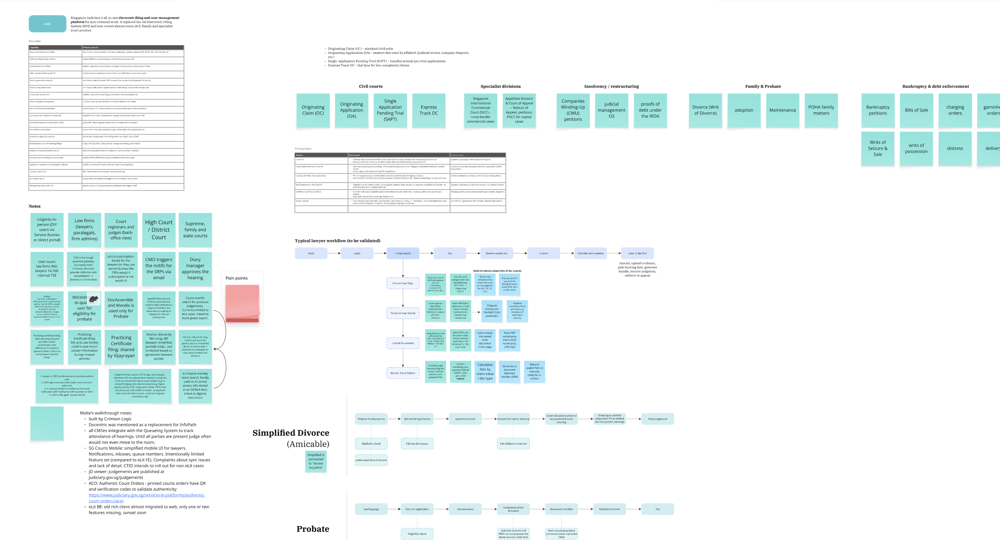
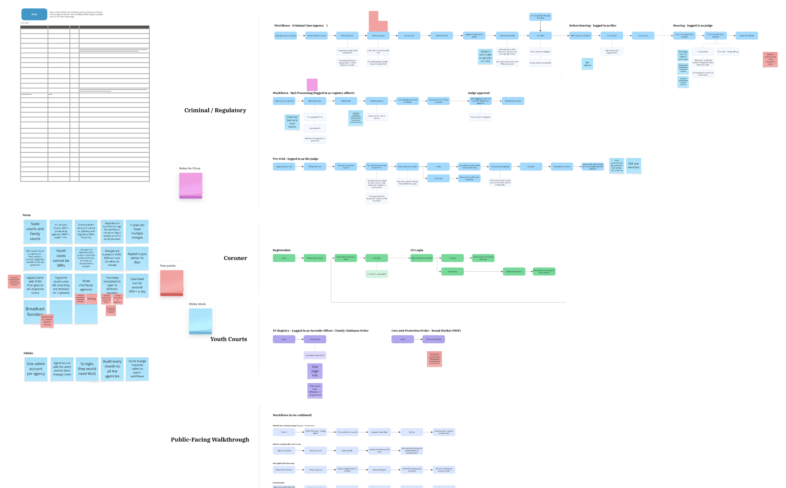
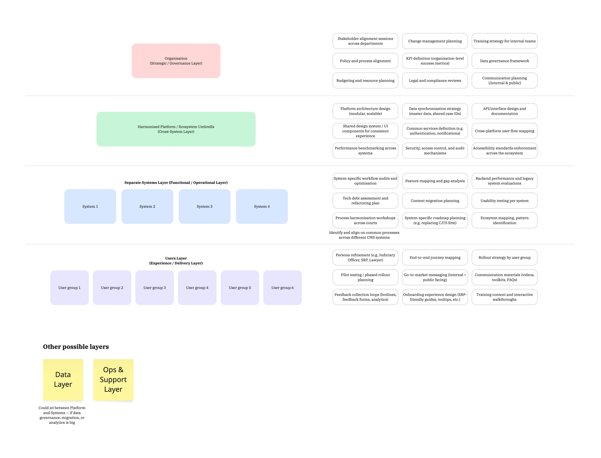
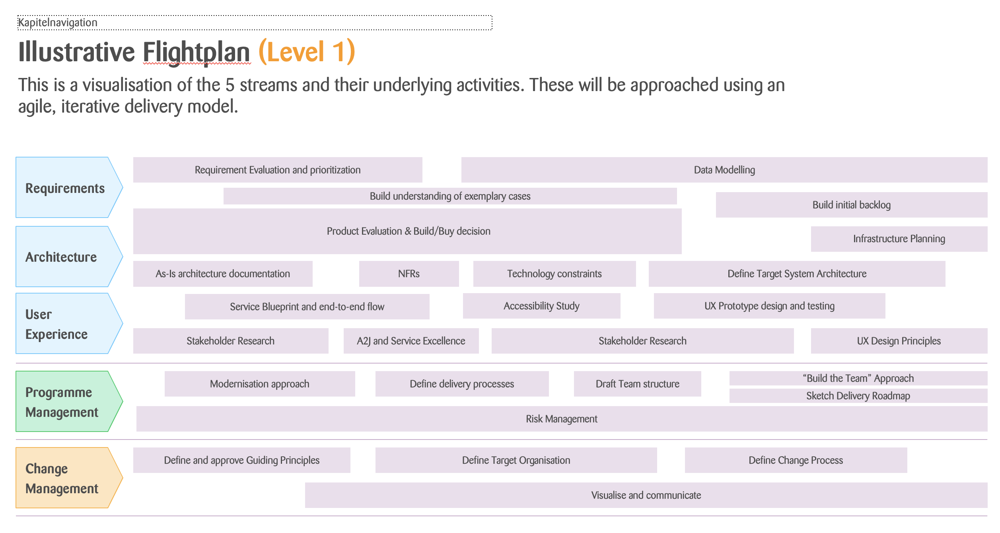
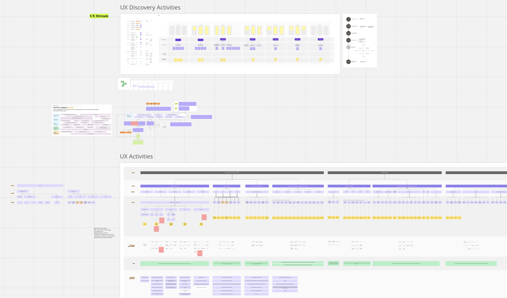

Before a multi-year platform modernisation could begin, someone had to map what actually existed. This is the story of a one-month scoping engagement across four interconnected case management systems — charting capabilities, mapping integration points, and surfacing the complexity that formal discovery would need to contend with.
The organisation managed case proceedings across four distinct case management platforms, each built for a different domain, by different vendors, at different points in time. A major modernisation programme was on the horizon. But before a single requirement could be written or a user could be interviewed, the programme team needed to understand what the current landscape actually looked like.
That meant walking through all four systems: mapping what each one did, what it was technically capable of, who used it, and — critically — how they connected to one another. The result of this one-month scoping phase would become the foundation everything else was built on.
I was brought in as UX Consultant on a three-person cross-functional scoping team — alongside a Principal BA and a Solutions Architect. Each of us brought a different lens; the value was in the synthesis across all three.
Capability inventory across 4 platforms, as-is state documentation, architecture review, vendor relationship analysis
Workflow walkthroughs with 5+ user role types per system; surfacing real usage vs. designed intent
Documenting every connection between systems — authentication, payment, calendaring, notifications, appeals flows, agency interfaces
Triangulating BA process docs, architecture maps, and design observations into a unified current-state picture
Cataloguing friction across capability categories: document management, templates, calendaring, reporting, user access
Structuring all findings into actionable inputs: what we know, what we don’t, where to focus, and what risks to flag
The four platforms had been built independently over more than a decade. Each served a distinct domain of case proceedings, had its own vendor, its own users, and its own technical architecture. Some had been migrated to modern cloud infrastructure; others still ran on legacy environments. Together they handled hundreds of cases daily across a wide range of proceedings types.
A modernisation programme of this scale — one that would eventually touch all four platforms, their users, and the integrations between them — could not begin with discovery alone. Going into user research without understanding the systems those users worked in would have meant spending the first few weeks of discovery just getting oriented. A focused scoping phase could compress that orientation into days and free up discovery to do what it does best: talk to users about their actual experience.
We weren’t there to find problems — that was discovery’s job. What we were trying to do was make sure the discovery team would already have enough systems context that when a user described something frustrating, the researchers could immediately place it: which system, which capability, which integration point. Instead of spending interview time asking “walk me through what happens when you file a case,” they could ask sharper questions because they already understood the mechanics. We were giving them a head start.
Each platform served a distinct segment of the case management lifecycle. We started by understanding each one on its own terms — what it did, who used it, how it was built. But the more interesting (and harder) work was figuring out how they related to each other, because that’s where most of the operational pain actually lived.
The primary platform for civil case filing and management, handling the broadest range of case types: civil matters, specialist divisions (admiralty, insolvency, intellectual property, corporate rescue), divorce proceedings, probate, and appeals. The oldest of the four platforms, with the highest accumulated technical debt and the most complex vendor relationship. External-facing via a law firm portal used by thousands of registered lawyers.
Civil Matters Specialist Courts Lawyer Portal AppealsThe operational backbone for criminal case management: intake, bail processing, hearing scheduling, judge and court officer workflows, regulatory matters, coroner proceedings, and youth court cases. The highest-volume system — handling 400+ cases daily. The only platform with a courtroom broadcast and document synchronisation capability. Shared cloud deployment infrastructure with System C.
Criminal Cases Bail Processing Youth Courts Regulatory CoronerDedicated to family proceedings: maintenance orders, simplified and contested divorce, mental capacity applications (MCA), custody and care orders, and welfare-related matters. Interfaces extensively with external agencies — hospitals, social workers, Ministry of Social and Family Development, and legal aid. The most cross-agency system of the four, with a user base including frontline social workers alongside legal practitioners.
Divorce Maintenance Orders Mental Capacity Care & Protection Agency InterfacesThe most public-facing of the four: a self-service portal for small claims, tenancy disputes, employment claims, and community mediation. The simplest case types but the most diverse user base — primarily self-represented parties with no legal background filing and managing their own cases. The platform most in need of usability improvement, and the one the programme had identified as a potential pilot for modernisation.
Small Claims Tenancy Disputes Employment Claims Self-RepresentedEach platform had been built with a clear domain in mind. But the organisation’s reality had grown sideways — cases that started in one domain routinely crossed into another. A criminal matter could generate a family proceeding. An appeal from the criminal platform ended up in the civil platform. Family cases involved external agencies that had no presence in any of the four systems. The formal integrations between systems were documented well enough. What wasn’t documented were the informal bridges — the manual handoffs, the duplicate data entry, the workarounds that staff had been doing for so long they’d become invisible. Those were the things we were really trying to surface.
We assessed each platform against twelve capability categories — not against a theoretical benchmark, but against what the platform actually did in day-to-day operation. The picture that emerged was one of fragmented implementation: capabilities that existed in one system but not others, shared data that was manually re-entered across all four, and integration points that worked on paper but created friction in practice. → View full capability blueprint
| Capability | Status across systems | Key finding |
|---|---|---|
| Document Management | Fragmented | File size limits vary dramatically across systems — forcing users to split large documents. No multimedia support (work-arounds involve embedding media inside PDFs). No unified in-app preview. Storage costs in the hundreds of terabytes for the oldest platform. |
| Templates | Major gap | Separately implemented in every system. Templates for notices, letters, and court orders are not standardised and not centrally managed. Changes require vendor intervention or code changes. Most frequently cited pain point across all stakeholder sessions. |
| Input Forms | Fragmented | Disparate look and feel across platforms. Intake forms — the primary touchpoint for case filing — are some of the most difficult to change and the most in need of simplification. Minute sheets tailored to specific user groups require cross-court alignment. |
| Calendaring | Partially aligned | Separately implemented in each system with insufficient sync. Shared data — room availability, quotas, court holidays — is manually entered into each platform independently, creating conflict resolution overhead and a persistent risk of scheduling errors. |
| Search | Significant gap | Two systems report functional search; one barely uses it due to poor performance; no cross-system search index exists. Large volumes of case information sit in unstructured documents — invisible to keyword search. No semantic search capability across any platform. |
| Reporting & Statistics | Fragmented | No single data platform. Each system uses different tools (Tableau, Qlik, Elixir). Many analytical queries require manual database access by vendors, creating delays and resource overhead. Ad-hoc statistical analysis depends on vendor availability. |
| Broadcast & Document Sync | Single system only | Only the Criminal & Regulatory platform has this capability (courtroom synchronisation of documents across parties). The other three systems have no equivalent. Users in those systems rely on entirely separate approaches for in-hearing document sharing. |
| Payment | Partially aligned | Payment methods are broadly aligned (eNETS, PayNow, offline), but fee structures are misaligned across platforms. Some systems use a subscription model; others collect via a separate financial system. No harmonised fee structure or clear system-of-record for fee definitions. |
| Notifications | Broadly aligned | Overall approach is consistent (in-app inboxes, email, SMS). However, redundant gateways exist — multiple SMS and mail services used across internal and external users. Not flagged as urgent, but consolidation would reduce operational overhead. |
| Archival | Largely absent | Minimal archival capability across all four platforms. Large volumes of files sit on fast-access storage (databases, S3) rather than cold storage, driving high ongoing costs. Only one system has any interface to archived legacy case data. |
| Workflow & Tasks | Inconsistent | Task assignment and workflow tracking exists in some systems but not others, and coverage is not consistent within systems. Users who work across multiple platforms experience significant variation in how work is assigned, tracked, and handed off. |
| User Management & Authorisation | Fragmented | Each system defines its own roles and access matrix independently. Users who work across multiple platforms must be managed separately in each. No unified authorisation layer. Consolidation was identified as a prerequisite for any automated cross-system workflow. |

System A walkthrough board — civil litigation capability mapping, case types, pain points, and lawyer workflow

System B walkthrough board — criminal & regulatory capability mapping, coroner, youth courts, and public-facing flows
The same pattern kept showing up: each system had done a reasonable job solving these problems within its own domain. But none of them had been designed with the other three in mind, so nobody had really accounted for the user who works across all four — and there were a lot of those users. Templates weren’t standardised because each system managed its own. Shared data like room bookings was manually re-entered because no one system owned it. Role matrices were defined independently because each vendor had built their own. The pain wasn’t really inside any single system. It was the accumulated cost of four separate solutions that were never meant to work together.
In any multi-system environment, the integration points — the moments where one system passes data, responsibility, or a user to another — are where the real operational complexity lives. Formal integrations are documented. The informal bridges, the manual handoffs, and the workarounds built around integration limitations are not. Mapping the handshakes meant finding both. → View full handshake map
Criminal case filed and managed; bail processed; hearings conducted
Appeals from criminal matters route here; Supreme Court proceedings handled
Family proceedings triggered by or related to criminal matters; shared infrastructure with Criminal platform
Simplest cases; self-service filing; no formal integration with other platforms
Criminal cases that proceed to appeal move from the Criminal & Regulatory platform to the Civil Litigation platform. This cross-system handoff is a formal integration — but the transition of case files, documents, and history between the two systems requires coordination that falls on operational staff rather than on any automated workflow.
Court rooms, hearing quotas, and public holidays are shared data used by all four systems for scheduling. None of the systems read this data from a shared source — it is manually entered into each platform independently. Conflicts between systems require manual reconciliation by administrative staff.
External users (lawyers, law firms, self-represented parties) authenticate via SingPass and CorpPass. Internal users use WOG Active Directory. Each system implements its own roles and access matrix on top of these. Users working across systems must be provisioned and managed independently in each platform, with no unified authorisation layer.
The Criminal and Family platforms connect to over 30 external agencies (police, prosecutors, social services, hospitals, MSF). Each integration is independently implemented, catering to that agency’s specific data formats and processes. No shared integration layer or common API pattern exists across the four platforms.
All four platforms channel payments through a central financial system (eNETS, PayNow, offline). However, fee structures are defined differently within each platform, and the financial system serves as the record of payment rather than the point of fee definition. Misalignment in fee structures between platforms creates reconciliation complexity.
The Criminal and Family platforms share deployment infrastructure and maintenance windows. Changes to one can affect the other. This coupling, which was not by design but by operational convenience, creates constraints on the modernisation sequencing — changes cannot be made independently without risk.
Most of the integrations actually worked fine on a technical level. What the handshake map gave the programme was something different: a picture of the dependencies that would shape what order things could be modernised in. Which systems were coupled in ways that meant you couldn’t change one without affecting the other. Which shared data had no owner. Which manual workarounds had grown so large they’d need to be deliberately designed out rather than just switched off. That kind of intelligence — before the discovery team had even spoken to a user — was already changing how leadership was thinking about sequencing.
One of the most important things the scoping phase achieved wasn’t an artefact — it was the evidence needed to argue for a full discovery phase. Before scoping, there was pressure to move straight into solution design. The thinking was that the systems were well-understood enough to start modernising. What the scoping work demonstrated was how much the organisation didn’t yet know about its own landscape: capabilities that were assumed to exist but didn’t, integrations that were assumed to be automated but were manual, and user workflows that had diverged significantly from what anyone in leadership expected.
The scoping findings gave us concrete evidence that a proper discovery phase — with user research, service mapping, and technical deep-dives — wasn’t optional. At the end of that discovery, the programme would have the basis for a real transformation plan. But the scoping phase had to come first to make the case that discovery was worth the investment.
Part of making that case was giving leadership a way to think about the scale of what they were dealing with. During the scoping phase, I developed an early framing — a four-layer model — to show that modernising these four platforms wasn’t just a technology problem or a UX problem. It would require coordinated decisions across governance, platform architecture, individual systems, and user experience. The model wasn’t a plan — it was a thinking tool to illustrate why discovery needed to investigate all four layers, not just the systems layer.

Early 4-layer framing developed during scoping — used to advocate for a discovery phase that would investigate all four levels, leading to a transformation plan at the end of discovery
Governance, policy alignment, KPI frameworks, legal and compliance reviews, and change management. Discovery would need to investigate how decisions get made across four courts with competing priorities.
Shared services, data synchronisation, common design patterns, cross-platform user flows. Discovery would need to define what “shared” actually means for four systems built by four vendors.
System-specific workflow audits, tech debt assessment, usability testing. Discovery would need to go deep into each platform to understand what could be harmonised and what had to stay specific.
Without something like this, the conversation kept defaulting to “which system do we modernise first?” — which assumed the work was sequential and system-by-system. The four-layer framing reframed the question: before you touch any individual system, you need decisions at the organisation and platform layers. That meant discovery couldn’t just be user research on one system. It had to investigate governance, shared data, integration dependencies, and user experience across all four platforms simultaneously. The transformation plan that would come out of discovery would be structured around these layers — but first, you had to do the discovery to fill them in.
With the four-layer model establishing the scope, we then translated the scoping findings into an illustrative flightplan for how discovery should be structured. The plan organised discovery across five parallel streams — Requirements, Architecture, User Experience, Programme Management, and Change Management — each with specific activities sequenced across the phase. This gave leadership a concrete picture of what discovery would actually involve, why it needed dedicated resourcing, and how the different workstreams would feed into each other.

Illustrative discovery flightplan — five parallel streams showing how the scoping findings would be investigated through a structured, iterative discovery phase
Within the five-stream flightplan, the UX stream needed its own detailed plan. Using what we’d learned during scoping — the user types, the cross-system workflows, the capability gaps — I mapped out the specific UX discovery activities: which research methods would be used where, how sessions would be sequenced across the four systems, and what deliverables each sprint would produce. This gave the programme a concrete view of what the UX workstream would actually do during discovery, and helped justify the resourcing it needed.

UX discovery and activities plan — detailed service design research activities mapped across sprints, informed by scoping findings
After one month across all four systems, a set of consistent themes emerged. These were not problems the scoping phase was asked to solve — but they were patterns that the discovery phase needed to investigate, and risks the programme needed to plan around.
Cited as a pain point in virtually every stakeholder session across all four systems. Templates for court notices, orders, and letters are maintained separately in each platform, are difficult to change without vendor involvement, and are not standardised in look or wording. Any unified platform will need a centralised template management capability as a baseline.
File size limits that are reasonable for simple cases (community disputes) become severe constraints for complex ones (criminal cases with 1000+ charges, each with associated files). The absence of in-app multimedia preview means complex cases require workarounds that slow down hearings. No platform has a consistent approach to document archival.
A significant number of operational staff — court officers, registry staff, senior judicial officers — work across two or more systems as a matter of routine. None of the four platforms was designed with this user in mind. User management is duplicated, role matrices are inconsistent, and there is no shared view of workload or case status across systems.
The four platforms have four different vendor relationships, each with different responsiveness, different code ownership arrangements, and different levels of technical documentation. The oldest platform’s vendor relationship had deteriorated significantly. Modernisation sequencing would need to account for vendor capacity and contract timelines as real constraints on what could change and when.
Room availability, court holidays, hearing quotas — data used by all four platforms for scheduling — has no system of record. It is manually maintained in each system independently. This is not a gap in any single platform. It is a gap in the ecosystem, and it will only be resolved by a decision at the programme level about where that data should live.
The Community Tribunals platform handles the simplest case types, has the most self-service-oriented user base, and has the most to gain from usability improvement. But its relative simplicity also means improvements there would not automatically transfer to the other three platforms. The pilot case for platform redesign needs to be carefully framed to extract learnings that generalise, not just a usability uplift in isolation.
The scoping team was deliberately cross-functional. Each discipline contributed a different layer of understanding — and the value was in what we could triangulate across all three perspectives.
Structured the engagement, facilitated stakeholder walkthroughs across all four systems, synthesised across disciplines, and translated findings into a format the discovery team and programme leadership could act on. Led handshake mapping and framing of the 4-layer model.
Documented business processes, capability inventories, and data flows within each system. Surfaced the operational logic behind how cases moved through each platform, and identified where documented processes diverged from actual practice.
Assessed the technical landscape: integration patterns, deployment architectures, legacy dependencies, code ownership arrangements, and vendor constraints. Identified the architectural decisions that would shape what modernisation was actually feasible and in what sequence.
The most useful findings came from the intersections between what each of us was looking at. The BA would document a business process. The Solutions Architect would assess the system underpinning it. And I could sit across both and ask: does this platform actually support the process it’s supposed to? The answer was frequently “partly” — sometimes because the system technically couldn’t do what was needed, sometimes because the process had evolved and the system hadn’t kept up. Either way, you only see those mismatches when someone is deliberately looking at both layers at the same time. That was essentially my job on this team.
At the end of one month, the programme had a set of artefacts built around a single purpose: giving the discovery phase — and the programme leadership — what they needed to move with confidence.
A consolidated current-state picture of all four platforms: what each one does, who uses it, its technical architecture, and its vendor relationship. The baseline everything else was built from.
Assessment of twelve capability categories across all four systems, with status ratings and key findings per capability. Designed to make cross-system comparison legible at a glance.
Documentation of every integration point between systems: formal integrations, informal bridges, manual workarounds, and the shared data nobody owned. The part of the landscape most likely to shape modernisation sequencing.
A consolidated list of friction points surfaced across all stakeholder sessions, organised by capability area and cross-referenced to the systems they appeared in. Input to the discovery research plan.
Areas where technical constraints, vendor relationships, or shared infrastructure would shape what modernisation could do and in what sequence. Designed to prevent the programme from making plans that would later collide with real constraints.
The evidence-based case for why a formal discovery phase was needed, with an early four-layer framing to show leadership the scope of what discovery would need to investigate. This became the basis for securing discovery funding and resourcing.
Each platform, taken individually, was pretty understandable. The complexity lived in the spaces between them — the data crossing boundaries, the users navigating multiple platforms, the integrations cobbled together one at a time over the years. If you only look at what each system documents about itself, you miss the interesting stuff. You have to deliberately go looking for what happens at the seams.
Every system had documentation, and every system had also evolved well beyond what that documentation described. Users had built workarounds into their daily routines that nobody thought to mention until you watched them work. Features that technically existed went unused. Things that were clearly needed hadn’t been built. If we’d only documented what each system was designed to do, we’d have produced something that was technically accurate but practically useless. The real job was documenting both: what was intended and what was actually happening.
Working alongside a Principal BA and Solutions Architect meant we could catch things none of us would have spotted individually. The BA understood how cases were supposed to move through a process. The architect understood what the system could and couldn’t technically support. My role was to sit across both and ask whether the process and the system were actually compatible — and often they weren’t, in ways that neither person had flagged because each was looking at their own layer. Someone has to hold that synthesis role explicitly, or the mismatches just sit there.
The capability map and handshake documentation were useful, but what actually shaped the programme’s direction most was the 4-layer model. It gave people a shared way to talk about where decisions needed to be made before features could be designed. In environments this complex, I’ve found the designer’s most important contribution is often not any single artefact but the conceptual structure that helps a large team make sense of what they’re all looking at. If sixty people can’t agree on how to think about the problem, the individual deliverables don’t matter much.
We went into the scoping phase with four platforms, a modernisation mandate, and an incomplete picture of what the programme was actually dealing with. We came out with a current-state view across all four systems, a capability assessment across twelve categories, a map of every significant integration point, a strategic framework for organising the work, and a register of the risks and dependencies that would shape sequencing.
But honestly, the artefacts were only part of it. The bigger thing the scoping phase produced was a shared understanding. The programme team — design, BA, architecture, and leadership — came out of it with a common picture of the landscape. When discovery kicked off, conversations could start at a much higher level. A user would describe a problem and the research team could immediately place it in the system architecture, rather than spending twenty minutes getting oriented.
The scoping findings also gave us a much clearer picture of what the discovery team itself needed to look like. Once we understood the scale of cross-agency integration, the complexity of the vendor landscape, and the breadth of user types across the four platforms, it became obvious that discovery couldn’t be staffed the same way scoping was. We could now articulate exactly what capabilities and expertise the core team needed — service design for the cross-system user journeys, technical research for the architecture dependencies, content design for the template problem, and someone who could navigate the governance and stakeholder landscape across multiple courts. The scoping phase didn’t just tell us what to investigate. It told us who should be doing the investigating.
Complex programmes tend to fail in fairly predictable ways: they discover constraints too late, they plan work in the wrong order, they treat systems as independent when they’re actually coupled. A scoping phase won’t prevent all of that. But it surfaces the big constraints early, while there’s still room to adjust the plan around them. For a programme that would eventually span multiple years and touch four platforms and dozens of integrations, spending one month upfront getting the lay of the land felt like a bargain.